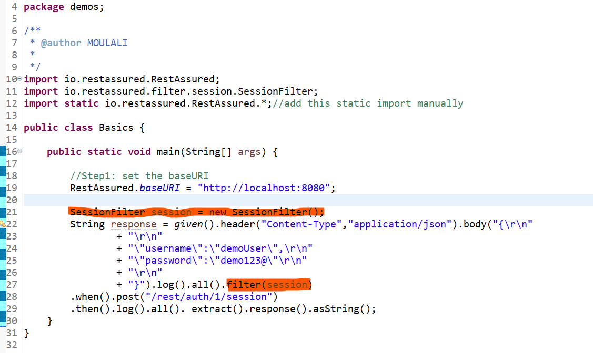
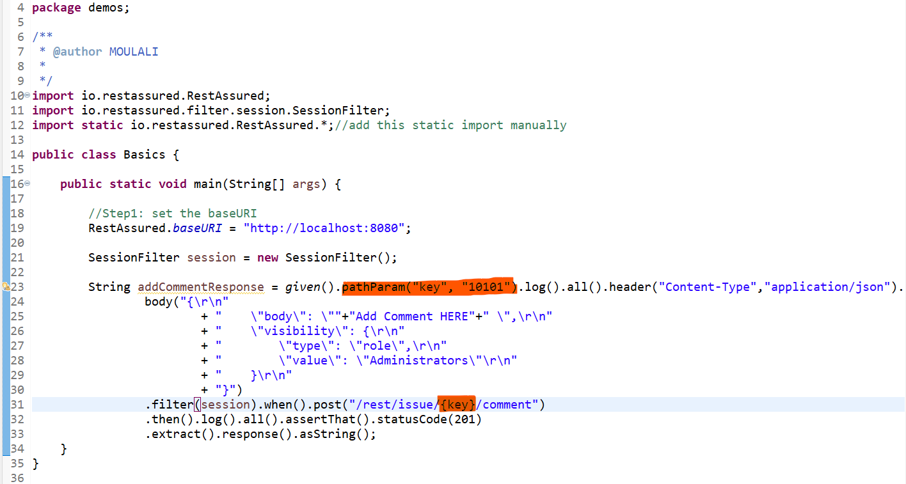
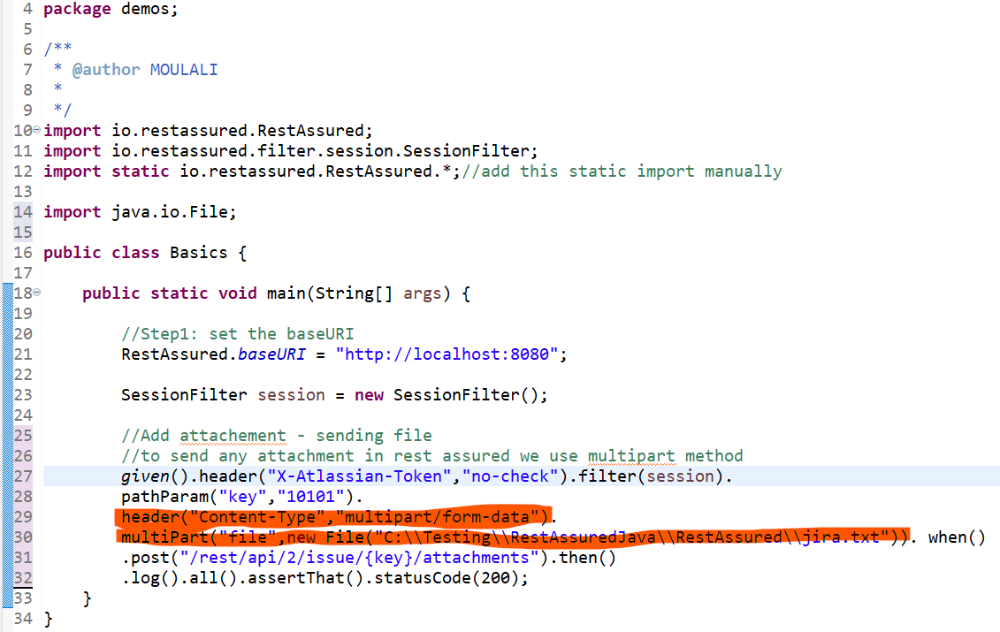
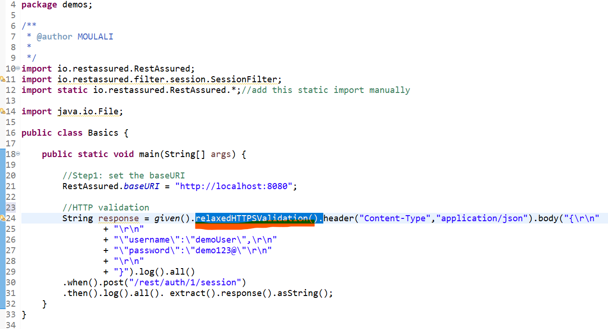

Create Session Filter Authentication in Rest Assured Automation
For Login Scenario instead of using JsonPath class and extracting the required key value we have SessionFilter class , when ever we know that a response returns a session which will be used in subsequent requests , u simply create object of SessionFilter class and pass that object using the filter(sessionObject)
Passing path parameter
To send the path parameters , use the pathParam() method after the given and use it using {}
Adding file
To send any attachment in rest assured we use multipart method
Validate HTTPS certification
Use relaxedHTTPSValidation() method after given
Now we can continue with the rest assured topics
PrevPage HomePage